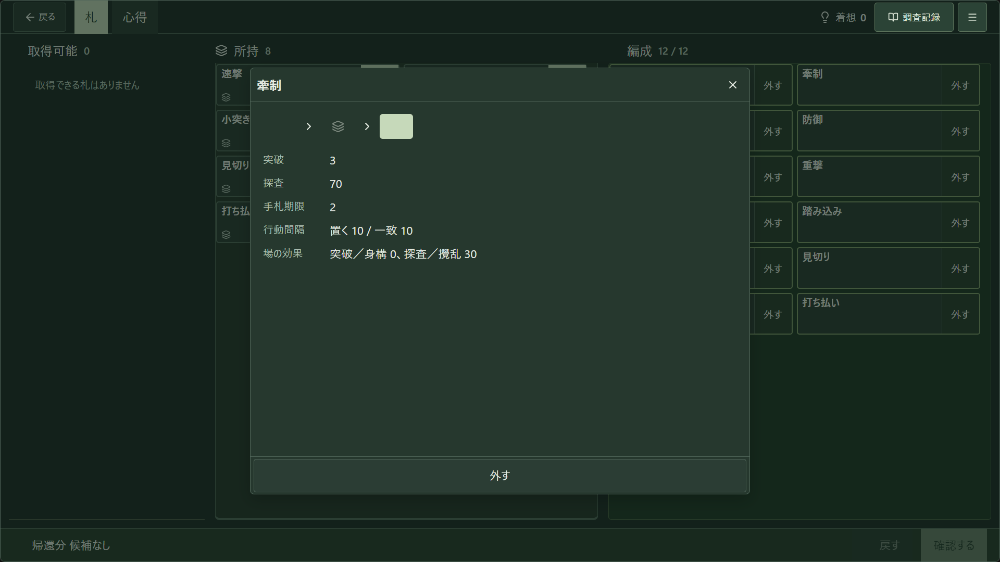
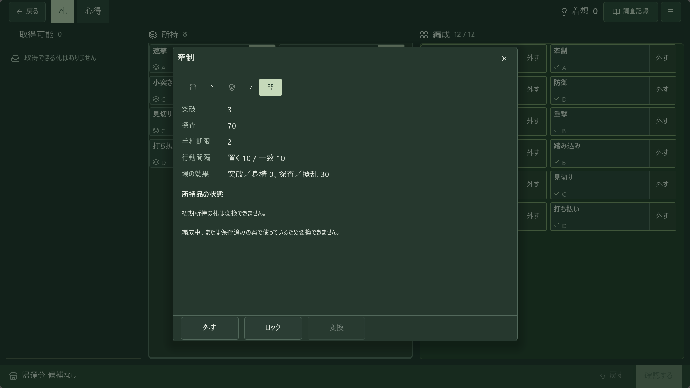

通常commandから得た同じrepro-home保存を双方へ供給。下の原寸は実際の原本／本編です。原本にはlock/変換の操作がなく、本編の機能を削除して一致にはしません。A/Bは配置を選ぶための概略図で、採用・ゲーム操作・UI適合ではありません。


どちらも拒否・見積・確定1回・再送防止を維持。ここでは表示位置だけを比較します。合法な変換可能ownedの全状態／各候補の実入力は不足として残し、成立していない人の開始条件を完了にしません。
Windows、本文読了、公開補足は既存のroute別A/Bと影響を継承し、未回答のままです。回答は人→とりまとめ→同じ本編/UIへ。